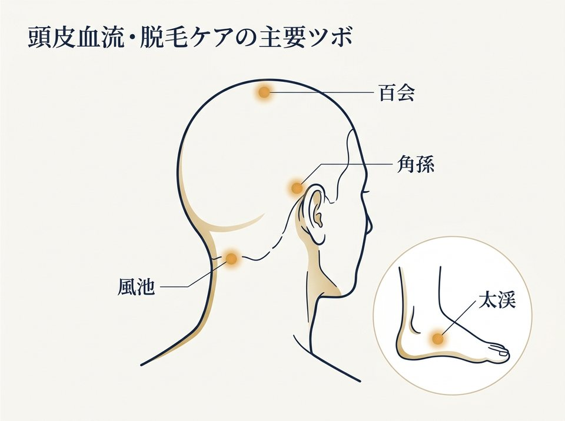

中毒性表皮壊死症の鍼灸
薬剤や感染を契機に全身の皮膚・粘膜が広範囲に壊死・剥離する極めて重篤な救急疾患です。急性期は即時入院が必須で、鍼灸は禁忌となります。


院長YouTube解説・関連動画
公開日：２０２１年 ９月１０日
更新日：２０２１年 １１月 ８日
本日は中毒性表皮壊死症について解説させていただきます。
☆本記事の内容
- •中毒性表皮壊死症とは
- •中毒性表皮壊死症の原因
- •中毒性表皮壊死症の症状
- •中毒性表皮壊死症の改善方法
- •中毒性表皮壊死症のまとめ
- •中毒性表皮壊死症は、重症多形滲出性紅斑と呼ばれる疾患群の一つ
- •混合性結合組織病は自己免疫疾患である
- •中毒性表皮壊死症の症状は、高熱や倦怠感などと皮膚や粘膜の病変
- •中毒性表皮壊死症の主な改善方法は、副腎皮質ステロイド薬
- •きっかけが薬の場合はきっかけとなった薬をわかるようにしておく
- •中毒性表皮壊死症の改善例
銀座そうぜん鍼灸院の宗前です。
このページを書いている私は、鍼灸師として１３年、担当した利用者様数８０，０００人を誇り、病気の休職者３００人を社会復帰できるまで回復させてきた実績があります。
🎥 他のYouTube切り抜き・解説を読む（あと1件）▼
中毒性表皮壊死症は、重症多形滲出性紅斑と呼ばれる疾患群の一つ
中毒性表皮壊死症は、高熱や全身倦怠感などの症状と、体全体に紅斑や水ぶくれ、ただれが広い範囲に現れる病気です。ライエル症候群と呼ばれることもあります。
重症多形滲出性紅斑と呼ばれる疾患群の一つで、中毒性表皮壊死症のほとんどは、スティーブンス・ジョンソン症候群の症状が進むことで起こります。
適切に改善を行うことで回復します。しかし、敗血症や多臓器不全などを引き起こすと命に危険が及ぶこともあります。
男性でも女性でも発症する可能性があり、発症する年齢も小児から高齢者まで様々です。
中毒性表皮壊死症の症状は、高熱や倦怠感などと皮膚や粘膜の病変
中毒性表皮壊死症の症状は、高熱や喉の痛み、全身の倦怠感、食欲の低下などです。同時に皮膚や粘膜には病変が現れます。
皮膚に現れる症状は、紅斑や水ぶくれ、びらんです。紅斑や水ぶくれやびらんは体の全体にたくさん現れます。紅斑の大きさはさまざまで、水ぶくれはすぐ破れてびらんになります。
口唇や口腔粘膜、鼻粘膜には痛みのある発赤、びらんが現れます。結膜が充血したりめやにが出ることもあります。尿道口や肛門の周りにもびらんが起き、場合によっては痛みがあったり出血が起きたりすることもあります。
皮膚や粘膜の病変は非常に進むスピードが早いため、症状が急激に悪くなり重篤な状態になることもあります。
中毒性表皮壊死症（Toxic Epidermal Necrolysis: TEN）は皮膚と粘膜の重篤な病気で、広範囲の皮膚が壊死して剥離することが特徴です。その症状は非常に重篤で、時には生命を脅かすこともあります。以下に、この病気の主な症状について詳しく説明します。
皮疹と皮膚の剥離
TENの最も目立つ症状は皮膚の剥離です。これは通常、赤い皮疹の出現から始まります。皮疹は全身に広がり、しばしば水疱や浸潤を伴います。その後、広範囲の皮膚が壊死し、痛みを伴って剥離します。これはしばしば2〜3日以内に進行し、場合によっては全身の80％以上の皮膚が影響を受けることもあります。
粘膜の症状
TENは、口、目、尿道、性器、肛門などの粘膜も影響します。これらの部位では、潰瘍やエロージョンが形成され、食事や視力、排泄などの日常的な活動に影響を及ぼす可能性があります。
全身症状
TENは全身性の病気であり、全身症状も引き起こします。これらには、発熱、倦怠感、関節痛、筋肉痛などが含まれます。また、皮膚の広範囲が剥離すると、体液と電解質の失調、感染症、体温調節障害など、さまざまな合併症を引き起こす可能性があります。
重篤な合併症
TENは、その重篤な症状と広範囲な皮膚の剥離から生じる合併症のため、生命を脅かす可能性があります。これらの合併症には、感染症、敗血症、呼吸器や消化器の問題、腎不全やその他の器官の機能不全などが含まれます。
中毒性表皮壊死症の主な改善方法は、副腎皮質ステロイド薬です。
中毒性表皮壊死症では、皮膚や粘膜の症状とともに肝臓や腎臓などの様々な臓器にも障害が起こります。そのため、その人の状態に合わせて副腎皮質ステロイド薬を使うことが大事です。
改善のために、短い期間で多くの副腎皮質ステロイド薬を点滴することや、 免疫グロブリン製剤をたくさん投与すること、血漿を入れ換えることもあります。
中毒性表皮壊死症（Toxic Epidermal Necrolysis: TEN）は皮膚と粘膜の病状で、広範囲の皮膚が壊死し剥離することを特徴とします。その改善方法は、緊急事態として扱われ、広い範囲での対処することが必要となります。以下にその改善の方針について詳しく説明します。
TENは、急性で全身性の病気であり、その症状は生命を脅かす可能性があります。したがって、全員ICUまたは熱傷専門施設にて改善を受けるべきです。このような施設では、病状の進行を監視し、体液と電解質のバランスを維持し、感染症のリスクを管理することが可能です。
TENの改善の基本的な要素は、広い範囲で対処することです。これには、疼痛管理、栄養補給、皮膚のケアが含まれます。また、皮膚の剥離による液体と電解質の喪失に対する補給や、感染防止のための抗生物質の投与も行われることがあります。
免疫抑制薬
TENの原因となる薬物を停止すると共に、免疫系の過剰な反応を抑制するための薬も行われることがあります。これには、ステロイドや免疫グロブリンが使用されることがありますが、これらの改善方法の有効性は確立していません。
創傷ケア
TENは、大部分または全体の皮膚が剥離してしまうため、熱傷と同様のケアが必要となります。これには、保湿剤や生体適合性のドレッシングの使用、正常な皮膚温度の維持、感染症の予防などが含まれます。
眼科、口腔科、泌尿器科のケア
TENは、目や口、尿道などの粘膜にも影響を与えるため、これらの領域の専門的なケアが必要となります。これには、人工涙液の使用や口腔保湿、カテーテルの挿入などが含まれます。
薬を飲んでいる時に、高熱や口唇や口腔のびらん、眼の充血、皮膚の広い範囲への紅斑が起こった時は、中毒性表皮壊死症の可能性があります。病院に相談に行くことをお勧めします。
薬がきっかけで中毒性表皮壊死症を発症した場合は、きっかけになった薬をきちんとお薬手帳などに記入して、病院などでは医師に伝えることが大切です。
▼ 詳しく知りたい項目だけタップして開けます（全項目の医学解説を収録）
01. 原因とメカニズム
なぜ症状が起きるのか・鍼灸の作用機序を読む
▼
01. 原因とメカニズム
なぜ症状が起きるのか・鍼灸の作用機序を読む
中毒性表皮壊死症（TEN／ライエル症候群）は、抗菌薬・消炎鎮痛薬・抗けいれん薬・市販の風邪薬などの薬剤や、マイコプラズマ等の感染症を契機に過剰な免疫反応が起こり、全身の皮膚と口・目・陰部などの粘膜が急速に壊死・剥離する指定難病です。多くはスティーブンス・ジョンソン症候群から進展し、敗血症や多臓器不全など生命を脅かすため、被疑薬の即時中止とICU・熱傷専門施設でのステロイドパルス療法・免疫グロブリン療法・全身管理が必須です。
なぜ鍼灸で改善へ向かうのか？（作用機序の図解）
中毒性表皮壊死症に対する鍼灸は、神経性炎症・掻痒（かゆみ）伝達と自律神経の鎮静機序を通じて、お体本来の回復力を引き出します。
湿疹・傷口への直接刺激を避け、曲池・血海・築賓・三陰交など全身の調整穴へアプローチします。
痒み感覚を伝える神経経路の過敏性を鎮め、「かゆい→掻く→悪化」の悪循環を断ちます。
交感神経の過緊張や夜間覚醒を和らげ、皮膚の修復が進みやすい血流と睡眠環境を整えます。
標準の保湿・外用・内服治療と協調し、ストレスや季節変化で悪化しにくい土台を支えます。
02. よくあるお悩み
このような症状はありませんか？（4項目）
▼
02. よくあるお悩み
このような症状はありませんか？（4項目）
- ✓薬の服用後に高熱や強い倦怠感、喉の痛みが急に出た
- ✓皮膚の広い範囲に紅斑・水疱・ただれが広がり、目や口にもびらんがある
- ✓退院後の体力低下や皮膚・粘膜の後遺症、自律神経の乱れに悩んでいる
- ✓原因薬剤の記録（お薬手帳管理）を徹底しながら回復期の体調を整えたい
03. 当院の施術アプローチ
施術の進め方・改善のポイントを見る
▼
03. 当院の施術アプローチ
施術の進め方・改善のポイントを見る
04. ツボ詳細・セルフケア一覧
皮膚・アレルギー・帯状疱疹・脱毛症の全身ツボ図解（6穴）
▼
04. ツボ詳細・セルフケア一覧
皮膚・アレルギー・帯状疱疹・脱毛症の全身ツボ図解（6穴）
実際の施術ではお一人おひとりの体質・症状に合わせて選穴しますが、アトピー性皮膚炎・慢性蕁麻疹・帯状疱疹痛・円形脱毛症の全身調整の臨床でよく用いられる代表的なツボの目安です。
| ツボ名 | 位置の目安 | 主な狙い | セルフケアの注意点 |
|---|---|---|---|
| 百会（ひゃくえ） | 頭頂部の中央 | 頭皮の微小循環（円形脱毛症等）とストレス性のかゆみ鎮静 | 皮膚に炎症や傷がある部位は避けて施術します。 |
| 曲池（きょくち） | 肘を曲げた外側のシワの先端 | アトピー・蕁麻疹のかゆみ（掻痒感）軽減の最重要穴 | 皮膚科の標準外用薬・内服薬と併用して行います。 |
| 合谷（ごうこく） | 手の甲、親指と人差し指の間 | 帯状疱疹痛の鎮痛補助・皮膚バリアの自律神経調整 | 帯状疱疹は発症早期の抗ウイルス薬内服が最優先です。 |
| 血海（けっかい） | 膝のお皿の内上角から指3本分上 | かゆみ・赤み・蕁麻疹の血流バランス調整 | 曲池と組み合わせる「曲池・血海」は皮膚ケアの定番です。 |
| 足三里（あしさんり） | 膝の下外側、指4本分下 | 腸管免疫と皮膚の回復力サポート | 慢性的な皮膚トラブルの体質づくりに用います。 |
| 三陰交（さんいんこう） | 内くるぶしの上から指4本分上 | 夜間のかゆみによる睡眠障害・乾燥肌の巡り改善 | 掻き壊しのある皮膚は避け清潔を保ってケアします。 |
05. 医学的根拠・国際査読論文（PubMed / Cochrane）
科学的エビデンス・出典リンク一覧（4件）
▼
05. 医学的根拠・国際査読論文（PubMed / Cochrane）
科学的エビデンス・出典リンク一覧（4件）
国際的な医学データベース（PubMed・Cochrane等）で報告されているアトピー性皮膚炎・慢性蕁麻疹・帯状疱疹痛・円形脱毛症の全身調整領域の代表的な査読済み鍼灸研究をまとめています（標準治療との併用や研究上の限界を含めて正確に掲載）。
| 年・研究デザイン | 対象・規模 | 主な結果 | 限界・出典 |
|---|---|---|---|
| 2023年 多施設3群RCT | 慢性特発性蕁麻疹 330名（3大学病院） | 4週時のUAS7変化量は真鍼-8.2 vs シャム-4.1 vs 待機-2.2と統計的有意差を確認。 | 最小臨床的重要差には未達・短期追跡。 Ann Intern Med (PMID: 37956431) |
| 2024年 メタ解析 | アトピー性皮膚炎 8 RCTs（n=463） | SCORAD（MD -10.61, p=0.004）、掻痒VAS（MD -14.71, p<0.00001）、DLQI（p<0.0001）が有意改善。 | EASI・IgEは有意差なし、大規模検証が課題。 BMJ Open (PMID: 39638592) |
| 2021年 シャム対照RCT | 軽〜中等症アトピー性皮膚炎 36名（韓国） | 4週時の総SCORAD変化は真鍼-11.83 vs シャム+0.45（P<0.0001）、終了4週後も持続。 | 単施設・小規模（重症例への外挿は慎重）。 BMC Complement Med Ther (PMID: 33926433) |
| 2023年 メタ解析 | 難治性掻痒（尿毒症性掻痒）7 RCTs（n=504） | 通常治療比で有効率RR 1.28（P=0.003）、透析併用でRR 1.42（P=0.0002）と有意に掻痒軽減。 | 透析患者対象のため一般皮膚疾患への外挿に留意。 J Pain Symptom Manage (PMID: 36055470) |
参考文献・出典
- 2023年 多施設3群RCT（慢性特発性蕁麻疹 330名（3大学病院））— Ann Intern Med (PMID: 37956431)
- 2024年 メタ解析（アトピー性皮膚炎 8 RCTs（n=463））— BMJ Open (PMID: 39638592)
- 2021年 シャム対照RCT（軽〜中等症アトピー性皮膚炎 36名（韓国））— BMC Complement Med Ther (PMID: 33926433)
- 2023年 メタ解析（難治性掻痒（尿毒症性掻痒）7 RCTs（n=504））— J Pain Symptom Manage (PMID: 36055470)
06. よくある質問（FAQ）
よくあるご質問を見る（2件）
▼
06. よくある質問（FAQ）
よくあるご質問を見る（2件）
Q. 薬を飲んだ後に高熱と口のただれ、目の充血、赤い発疹が出ました。どうすればよいですか？
中毒性表皮壊死症や重症薬疹の初期サインの可能性があるため、自己判断で様子を見ず、服用中の薬を持参して直ちに医療機関を受診してください。
Q. 退院後の体調回復に鍼灸を利用できますか？
皮膚・粘膜が十分に回復し、主治医から施術の許可が出た安定期であれば、患部を避けた全身の疲労回復・自律神経ケアとしてご相談いただけます。
あわせて読まれる関連疾患（皮膚のお悩み）
高熱とともに全身の皮膚や粘膜にびらん・水疱が生じる重症薬疹（指定難病）です。緊急入院が必須で、退院後の安定期ケアのみ対応します。
薬剤を契機に高熱・全身発疹・臓器障害を起こす重症薬疹です。入院治療が必須で急性期は鍼灸禁忌、退院後の安定期ケアに対応します。
膝から下や足関節周囲に網状の皮斑と強い痛みを伴う潰瘍を繰り返す難治性疾患です。皮膚科管理と併用し、潰瘍予防と回復を支えます。
花粉が肌に付着することでまぶたや頬、首に乾燥・赤み・かゆみが起きる皮膚炎です。保湿と避粉に加え、4つのツボで体質を整えます。
黄色ブドウ球菌などの細菌感染で皮膚や皮下に膿が溜まる感染症です。抗菌薬や外科処置を最優先に、安定期の体質ケアを支えます。
自己免疫が筋肉や皮膚を攻撃し筋力低下や倦怠感を起こす膠原病（指定難病）です。専門医治療を最優先に、安定期の体調維持を支えます。
CLINICAL RECOVERY CASES
✨ 実際の臨床改善事例・回復経過を見る
銀座本院をはじめ各院での実際の改善事例を症状別に絞り込んでご確認いただけます。
おひとりで悩まず、まずはご相談ください
銀座本院・川口・大宮・横浜・博多・田無の各院でご予約を承っております。